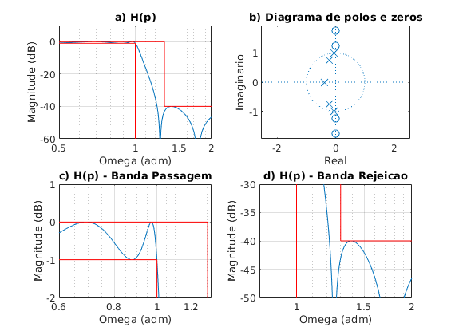
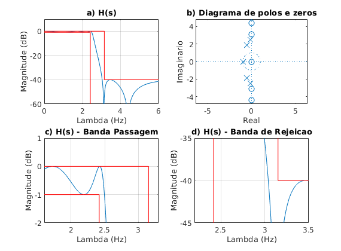
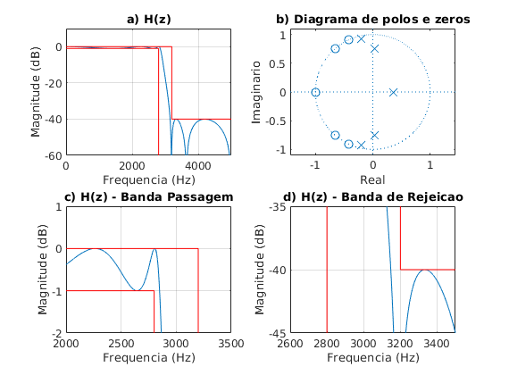
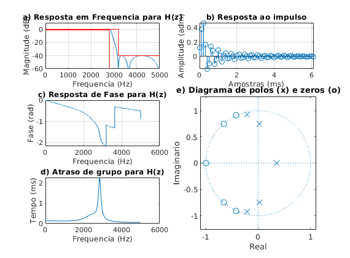

Contents
% Projeto filtro 1 % LP - (fa = 10000 Hz, f1 = 2800 Hz; f2 = 3200 Hz, Ap = 1 dB, As = 40 dB, GdB = 0 dB) close all; clear all; clc; ExecutarAjuste = 1;
Especificacoes
Ap = 1; As = 40; GdB = 0; fa_espec = 10000; fp_espec = 2800; fs_espec = 3200; wa_espec = 2*pi*fa_espec; wp_espec = 2*pi*fp_espec; ws_espec = 2*pi*fs_espec; Wp_espec = 1; Ws_espec = ws_espec/wp_espec; tetha_s_espec = ws_espec/(wa_espec/2); tetha_p_espec = wp_espec/(wa_espec/2); lambda_s_espec = 2*tan(tetha_s_espec * pi/2); lambda_p_espec = 2*tan(tetha_p_espec * pi/2); Os_espec = lambda_s_espec/lambda_p_espec; Op_espec = 1; % Ajustes if ExecutarAjuste delta = (3200-3102)/2; else delta = 0; end fa = fa_espec; wa = wa_espec; fp = fp_espec + delta; fs = fs_espec + delta; wp = 2*pi*fp; ws = 2*pi*fs; Wp = wp_espec; Ws = ws/wp; tetha_s = ws/(wa/2); tetha_p = wp/(wa/2); lambda_s = 2*tan(tetha_s * pi/2); lambda_p = 2*tan(tetha_p * pi/2); Os = lambda_s/lambda_p; Op = 1;
IIR Eliptico
[n, Wn] = ellipord(Op, Os, Ap, As,'s'); % n = n - 1; [b,a] = ellip(n,Ap,As, Wn, 's');
Primeiro plot
figure(1) % suptitle('Prot??tipo Passa Baixa') subplot(221) [h, w] = freqs(b, a, logspace(-2, 1, 1000000)); semilogx(w, 20*log10(abs(h))) title('a) H(p)') grid on; hold on; plot([10^-2,Os_espec,Os_espec,10^1],[0,0,-As,-As], 'r') plot([10^-2,Op_espec,Op_espec],[-Ap,-Ap,-80], 'r') xlim([0.5 2]); ylim([-60 10]); xlabel('Omega (adm)'); ylabel('Magnitude (dB)'); hold off; subplot(222) zplane(b, a); title('b) Diagrama de polos e zeros') xlabel('Real'); ylabel('Imaginario'); subplot(2,2,3) semilogx(w, 20*log10(abs(h))) title('c) H(p) - Banda Passagem') xlabel('Omega (adm)'); ylabel('Magnitude (dB)'); grid on; hold on; plot([10^-2,Os_espec,Os_espec,10^1],[0,0,-As,-As], 'r') plot([10^-2,Op_espec,Op_espec],[-Ap,-Ap,-80], 'r') xlim([0.6 1.33]); ylim([-2 1]); subplot(2,2,4) semilogx(w, 20*log10(abs(h))) title('d) H(p) - Banda Rejeicao') xlabel('Omega (adm)'); ylabel('Magnitude (dB)'); grid on; hold on; plot([10^-2,Os_espec,Os_espec,10^1],[0,0,-As,-As], 'r') plot([10^-2,Op_espec,Op_espec],[-Ap,-Ap,-80], 'r') xlim([0.8 2]); ylim([-50 -30]); % eixos = axes; % titulo = title('Prototipo LP', 'FontSize', 14, 'Color', [0.6350 0.0780 0.1840]); % eixos.Visible = 'off'; % titulo.Visible = 'on';
Transformacao de frequencia
LP para LP
syms p;
Np(p) = poly2sym(b, p);
Dp(p) = poly2sym(a, p);
Hp(p) = Np(p) / Dp(p);
pretty(vpa(collect(Hp(p)), 5))
31 4 15 3 32 2 16
(3.0487 10 p - 4.4374 10 p + 1.4282 10 p - 1.0235 10 p
32 32 5 32 4 33 3
+ 1.4918 10 )/(6.4904 10 p + 5.9932 10 p + 1.1988 10 p
32 2 32 32
+ 7.3291 10 p + 5.1152 10 p + 1.4918 10 )
Normalizando de acordo com p^n
syms s;
Hs(s) = collect(subs(Hp(p), s/lambda_p));
pretty(vpa(Hs(s), 3))
[N, D] = numden(Hs(s));
bs = sym2poly(N);
as = sym2poly(D);
an = as(1);
bsn = bs/an;
asn = as/an;
Hsn(s) = poly2sym(bsn, s)/poly2sym(asn, s);
pretty(vpa(Hsn(s), 5))
92 4 77 3 94 2 78
(9.78 10 s - 3.55 10 s + 2.85 10 s - 5.1 10 s
95 93 5 94 4 94 3 95 2
+ 1.85 10 )/(8.34 10 s + 1.92 10 s + 9.59 10 s + 1.46 10 s
95 95
+ 2.55 10 s + 1.85 10 )
4 -17 3 2 -16
0.11719 s - 4.2553 10 s + 3.4169 s - 6.1088 10 s + 22.214
------------------------------------------------------------------
5 4 3 2
s + 2.3037 s + 11.497 s + 17.534 s + 30.531 s + 22.214
Resposta em frequencia
figure(2) % suptitle('Transforma????o LP -> LP') subplot(221) [hf, wf] = freqs(bsn, asn, linspace(0, 6, 100000)); % semilogx(wf, 20*log10(abs(hf))) plot(wf,20*log10(abs(hf))); ylim([-60 10]) title('a) H(s)') grid on hold on plot([0,lambda_s_espec,lambda_s_espec,(fa/2/1000)+1],[0,0,-As,-As], 'r') plot([0,lambda_p_espec,lambda_p_espec],[-Ap,-Ap,-80], 'r') xlabel('Lambda (Hz)'); ylabel('Magnitude (dB)'); subplot(222) zplane(bsn, asn); title('b) Diagrama de polos e zeros') xlabel('Real'); ylabel('Imaginario'); subplot(2,2,3) plot(wf,20*log10(abs(hf))); title('c) H(s) - Banda Passagem') grid on; hold on; plot([0,lambda_s_espec,lambda_s_espec,(fa/2/1000)+1],[0,0,-As,-As], 'r') plot([0,lambda_p_espec,lambda_p_espec],[-Ap,-Ap,-80], 'r') xlim([1.6 3.3]); ylim([-2 1]); xlabel('Lambda (Hz)'); ylabel('Magnitude (dB)'); subplot(2,2,4) plot(wf,20*log10(abs(hf))); title('d) H(s) - Banda de Rejeicao') grid on; hold on; plot([0,lambda_s_espec,lambda_s_espec,(fa/2/1000)+1],[0,0,-As,-As], 'r') plot([0,lambda_p_espec,lambda_p_espec],[-Ap,-Ap,-80], 'r') xlim([2.2 3.5]); ylim([-45 -35]); xlabel('Lambda (Hz)'); ylabel('Magnitude (dB)'); % eixos = axes; % titulo = title('Transformacao LP -> LP', 'FontSize', 14, 'Color', [0.6350 0.0780 0.1840]); % eixos.Visible = 'off'; % titulo.Visible = 'on';
Transformando em Z (bilinear)
syms z;
aux = 2*((z-1)/(z+1));
Hz(z) = collect(subs(Hs(s), aux));
pretty(vpa(Hz(z),3))
[Nz,Dz] = numden(Hz(z));
bz = sym2poly(Nz);
az = sym2poly(Dz);
an = az(1);
bzn = bz/an;
azn = az/an;
Hzn(z) = poly2sym(bzn,z) / poly2sym(azn,z);
pretty(vpa(Hzn(z),5))
95 5 95 4 95 3 95 2 95
(1.58 10 z + 4.97 10 z + 8.28 10 z + 8.28 10 z + 4.97 10 z
95 96 5 93 4 96 3 95 2
+ 1.58 10 )/(1.31 10 z + 7.69 10 z + 1.73 10 z - 4.28 10 z
95 95
+ 5.82 10 z - 2.33 10 )
5 4 3 2
0.12015 z + 0.37904 z + 0.63184 z + 0.63184 z + 0.37904 z + 0.12015
-----------------------------------------------------------------------
5 4 3 2
z + 0.0058624 z + 1.3167 z - 0.32649 z + 0.44365 z - 0.17764
figure(3) % suptitle('Transforma????o anal??gico -> digital') subplot(221) [hz, wz] = freqz(bzn, azn, linspace(0, pi, 100000)); plot(wz/pi*fa/2, 20*log10(abs(hz))); xlim([0 fa/2]);ylim([-60 10]) title('a) H(z)') grid on hold on plot([0,fs_espec,fs_espec,(fa/2)+1000],[0,0,-As,-As], 'r') plot([0,fp_espec,fp_espec,],[-Ap,-Ap,-80], 'r') xlabel('Frequencia (Hz)'); ylabel('Magnitude (dB)'); subplot(222) zplane(bzn, azn); title('b) Diagrama de polos e zeros') xlabel('Real'); ylabel('Imaginario'); subplot(2,2,3) plot(wz/pi*fa/2, 20*log10(abs(hz))); title('c) H(z) - Banda Passagem') grid on; hold on; plot([0,fs_espec,fs_espec,(fa/2)+1000],[0,0,-As,-As], 'r') plot([0,fp_espec,fp_espec,],[-Ap,-Ap,-80], 'r') xlim([2000 3500]); ylim([-2 1]); xlabel('Frequencia (Hz)'); ylabel('Magnitude (dB)'); subplot(2,2,4) plot(wz/pi*fa/2, 20*log10(abs(hz))); title('d) H(z) - Banda de Rejeicao') grid on; hold on; plot([0,fs_espec,fs_espec,(fa/2)+1000],[0,0,-As,-As], 'r') plot([0,fp_espec,fp_espec,],[-Ap,-Ap,-80], 'r') xlim([2600 3500]); ylim([-45 -35]); xlabel('Frequencia (Hz)'); ylabel('Magnitude (dB)'); % eixos = axes; % titulo = title('Transformacao Analogico -> Digital', 'FontSize', 14, 'Color', [0.6350 0.0780 0.1840]); % eixos.Visible = 'off'; % titulo.Visible = 'on';
figure(4) % suptitle(['LP IIR ' num2str(fp_espec) '-' num2str(fs_espec) ' Ordem: ' num2str(n)]) escala = fa/2; subplot(321) [hz, wz] = freqz(bzn, azn, linspace(0, pi, 10000)); plot(wz/pi*escala, 20*log10(abs(hz))); xlim([0 fa/2]);ylim([-60 10]) title('a) Resposta em Frequencia para H(z)') grid on hold on plot([0,fs_espec,fs_espec,(fa/2)+1000],[0,0,-As,-As], 'r') plot([0,fp_espec,fp_espec,],[-Ap,-Ap,-80], 'r') xlabel('Frequencia (Hz)'); ylabel('Magnitude (dB)'); subplot(3,2,[4 6]) zplane(bzn, azn); title('e) Diagrama de polos (x) e zeros (o)') xlabel('Real'); ylabel('Imaginario'); subplot(322) delta = [1, zeros(1, 61)]; imp = filter(bzn, azn, delta); x_imp = [0:length(delta)-1]/fa*1000; stem(x_imp, imp); grid on; title('b) Resposta ao impulso') xlabel('Amostras (ms)'); ylabel('Amplitude (adm)'); subplot(323) plot(wz/pi*escala, unwrap(angle(hz))/pi); grid on; title('c) Resposta de Fase para H(z)') xlabel('Frequencia (Hz)'); ylabel('Fase (rad)'); subplot(325) [del_y, del_x] = grpdelay(bzn, azn); plot(del_x/pi*fa/2, del_y/fa*1000); xlabel('Frequencia (Hz)'); ylabel('Tempo (ms)'); title('d) Atraso de grupo para H(z)') % eixos = axes; % texto = ['LP IIR ' num2str(fp_espec) '-' num2str(fs_espec) ' Ordem: ' num2str(n)]; % titulo = title(texto, 'FontSize', 14, 'Color', [0.6350 0.0780 0.1840]); % eixos.Visible = 'off'; % titulo.Visible = 'on';